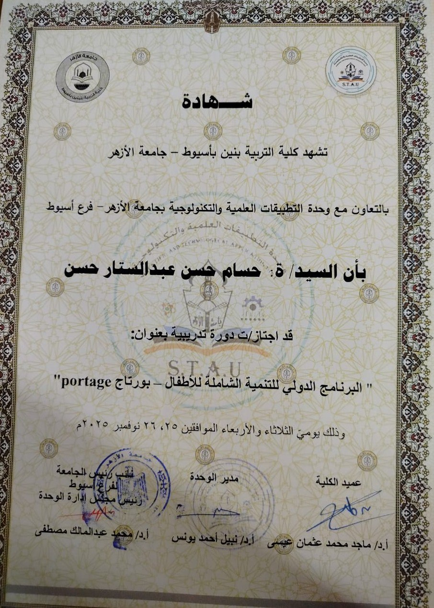

من أنا
أنا AL-Hossam Hassn، متخصص في تربية وتنمية الطفل، وبشتغل على مساعدة الأهل والمربين في فهم احتياجات الأطفال النفسية والسلوكية من حديث الولادة وحتى 9 سنوات ونصف.
حاصل على شهادات معتمدة في مجال تنمية الطفل، من بينها برنامج بورتاج للتنمية الشاملة للأطفال (معتمد من جامعة الأزهر)، بالإضافة إلى شهادة في مقياس ستانفورد–بينيه للذكاء.
هدفي إني أقدّم محتوى تربوي مبني على أسس علمية لكن بشكل عملي، بحيث تتحول المعرفة إلى خطوات واضحة وسهلة تتطبق داخل البيت، وكل مرحلة عمرية ليها محتوى يناسبها.
رسالة المنصة:
نفهم الطفل صح… ونساعده ينمو بأمان وهدوء خطوة بخطوة.
الشهادات والمؤهلات

شهادة برنامج بورتاج – جامعة الأزهر
ملاحظة:
الهدف من الشهادات إن المحتوى يكون مبني على منهجية علمية… لكن الأهم
عندي هو “إزاي تتحول المعلومة لخطوات” تنفع البيت.